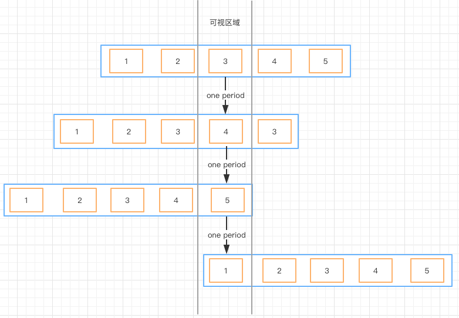
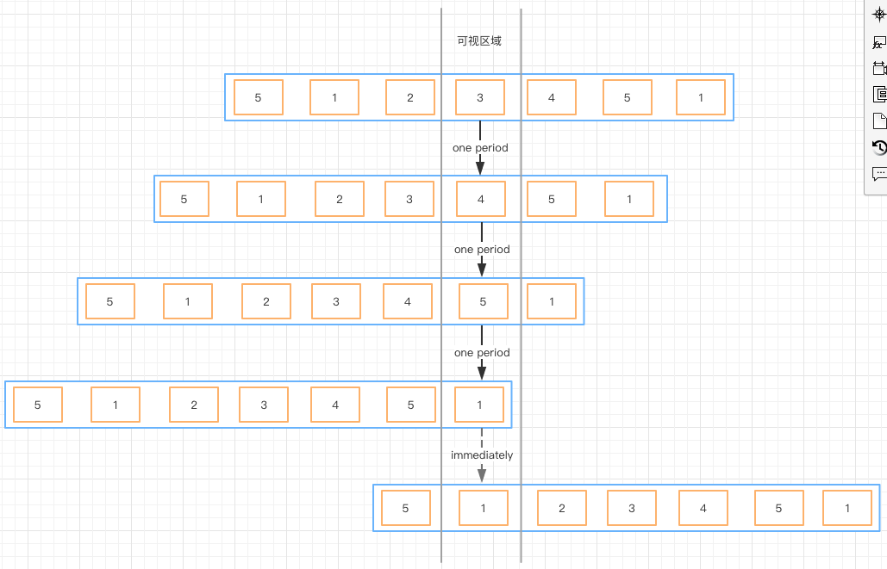
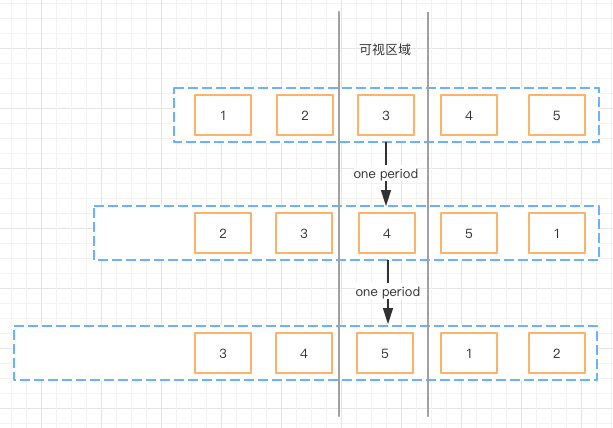
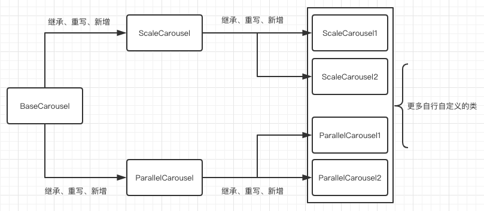

图片轮播组件实现
为什么要自己实现
图片轮播，这其实已经是一个烂大街的功能，到处可见；网上也有很多现成的组件，那为什么还要自己来实现呢？主要的原因有两个
- 性能
- 定制化
一个是网上的组件良莠不齐，在pc跑跑还可以，到了移动端，各种卡。
另外一个原因，是因为有诸多定制化的交互要实现，所以还是自力更生，丰衣足食！
举两个栗子
在自己撸代码之前，先来看看别人家的组件，正所谓：不看白不看。下面列举两种网上比较通用的轮播方案
- 方案一

- 方案二

方案一在轮播至边界时，需要从这一端快速滑动至另外一端，体验不佳；
方案二对边界轮播做了优化，但还是略显不足；
原创方案
接下来看看相关的示意图！

- 容器用了虚线框，因为此方案的ul是不需要设置宽高的
- 容器ul和元素li都使用了translate3d以及相关属性,从而更好的利用硬件加速
- 边界处理：只移动一个元素，便可实现循环，性价比更高
demo
只处理了移动端事件（touch系列），所以要体验完整功能，请使用移动端浏览器打开以下实例。代码架构
上述三个demo代表了三种图片轮播模式，其中`BaseCarousel`是另外两种模式的基础，也可以说是一切拓展模式的基础。其他类型的banner轮播图模式，都是继承于`BaseCarousel`，然后通过重写、新增自定义逻辑等方式拓展。

github项目
更多细节和源码，请：点击访问